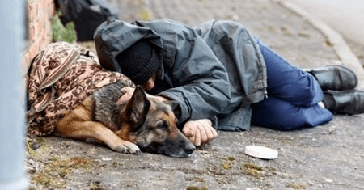
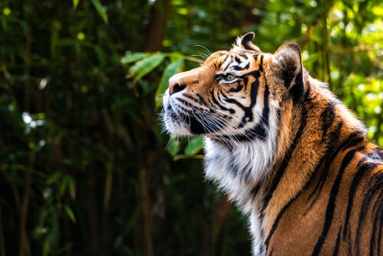
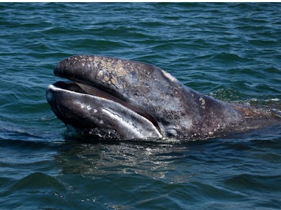

En esta sección te contaremos todas las noticias relacionadas al mundo animal. Historias de rescates, de amor incondicional, récords y mucho más.
Hombre sin hogar y perrito se aferran abrazados tratando de sobrevivir en el frío
Lulo fue un hombre brasilero que a lo largo de su vida enfrentó diferentes problemas. Por lo tanto, se quedó sin un hogar y tuvo que valerse de la ayuda de los transeúntes del municipio de Severo para poder comer algo. No obstante, en medio de esa situación adversa, se cruzó con una de las mejores bendiciones. Pues, Bingo —un perrito que también deambulaba por las calles sin rumbo fijo— se le acercó y le hizo saber que quería estar junto a él.
La senda del tigre, el documental sobre el tigre siberiano
El documental ofrecido por RT documentales (disponible en YouTube), aborda la posición del gobierno Chino respecto a la conservación del tigre siberiano. En él se desarrollan una serie de programas para garantizar su conservación y salvarlo de la extinción. Pero existen dos grandes obstáculos por enfrentar:
- La población rural, que ve amenazada su calidad de vida mientras la presencia del tigre se mantenga en sus territorios.
- Los cazadores furtivos, que encuentran en la caza y venta de tigres una fuente de ingresos muy sugerente a la que no van a renunciar fácilmente.
Características y hábitat de la ballena gris
La especie Eschrichtius robustus, conocida como ballena gris, es la única integrante actual de la familia Eschrichtiidae. Su rasgo más llamativo es el color de su piel, grisácea y acompañada de manchas blancas. Las manchas son propias de cada ballena, siendo un rasgo identificativo entre los distintos individuos.
Además, su cuerpo es la residencia de diferentes animales como crustáceos o parásitos como los percebes.
Por ello, aunque se denomine ballena gris, cuanto mayor es el ejemplar, más difícil es visualizar esta tonalidad.